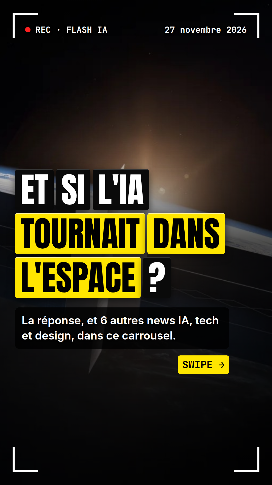
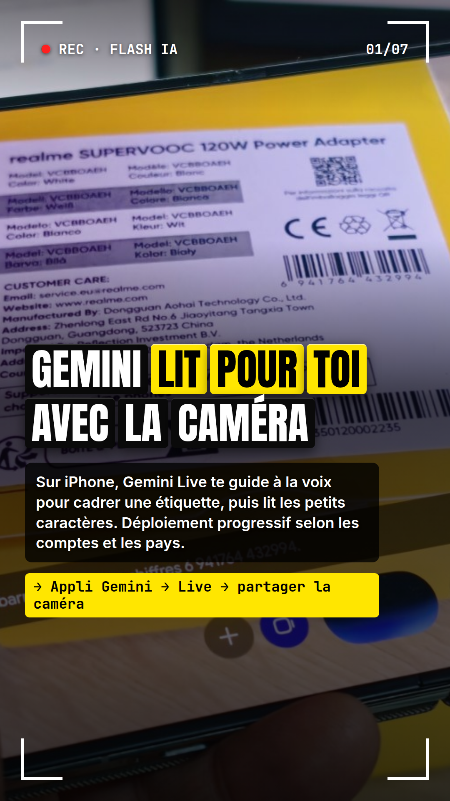
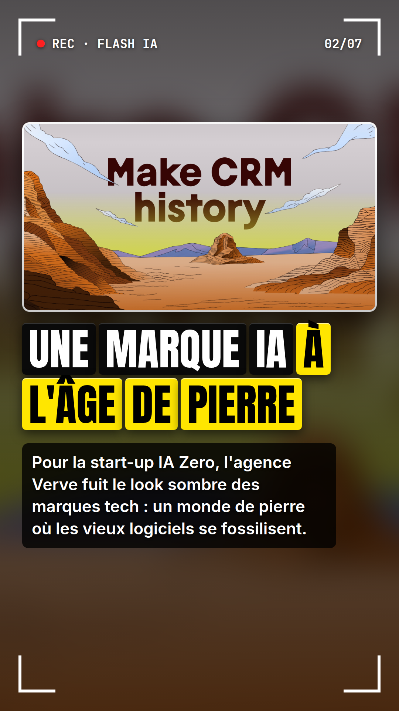
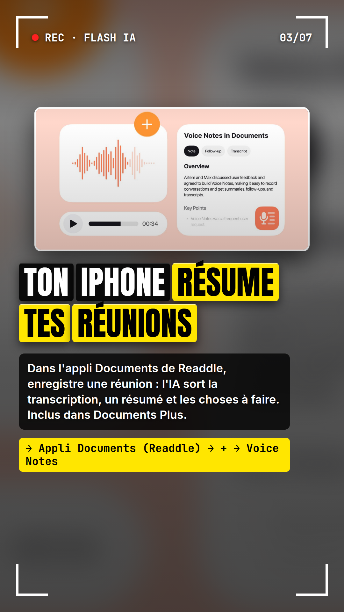
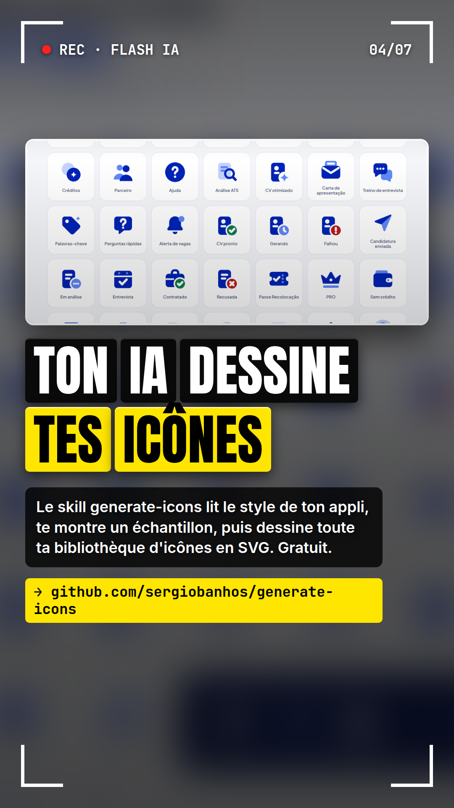
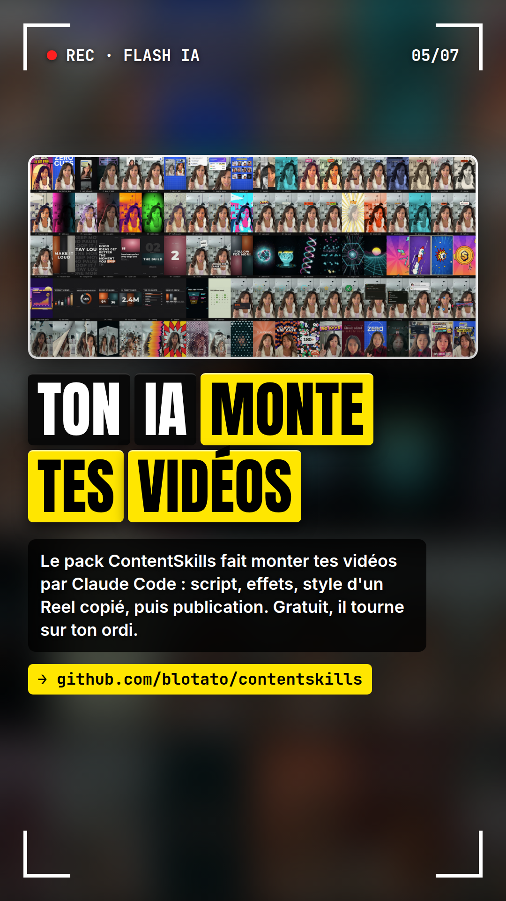
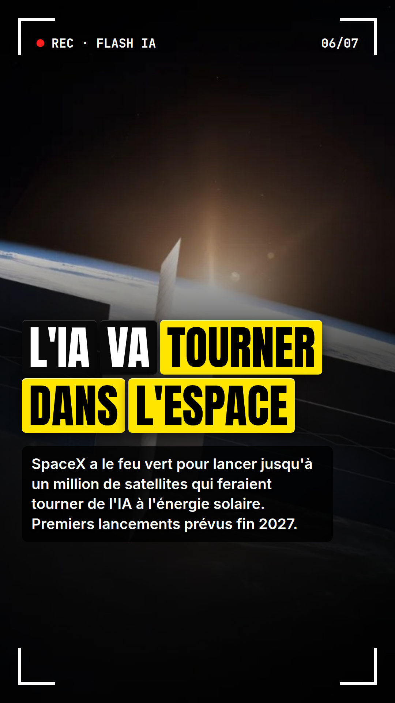
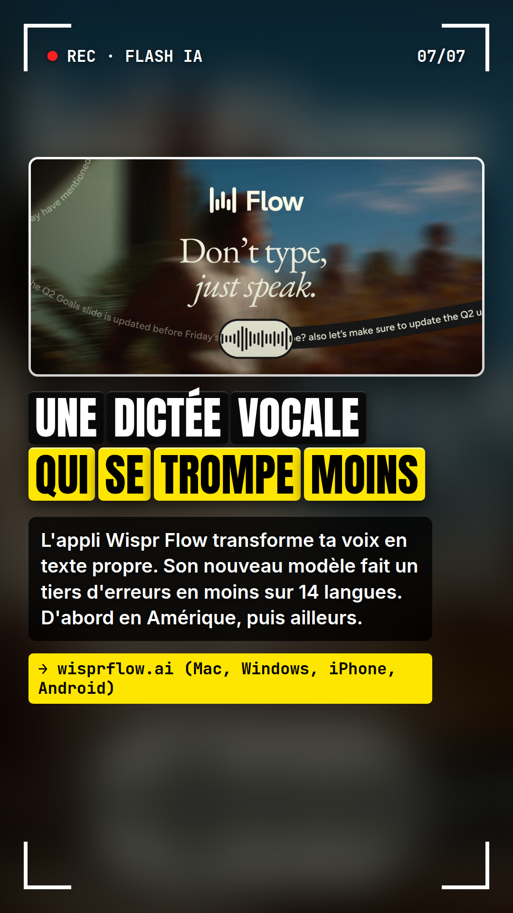
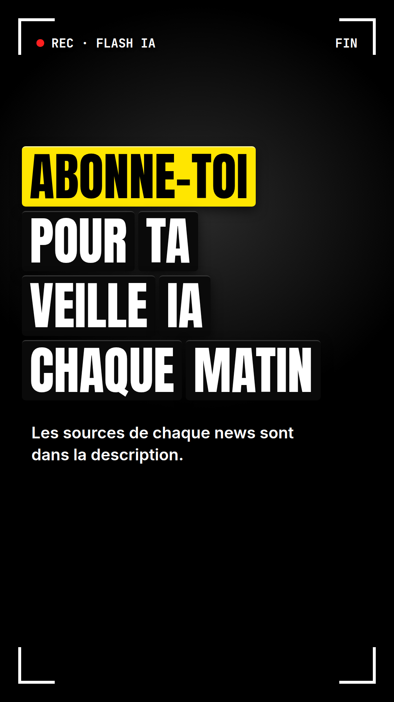

2026-11-27 · 9 slides
Et si l'IA tournait dans l'espace ? 👇 1. Gemini lit pour toi avec la caméra — https://www.frandroid.com/marques/3339975_jai-teste-la-vision-guidee-de-gemini-live-sur-iphone-super-pour-decrire-mais-bride-par-ios-pour-la-photo 👉 Où le trouver : Appli Gemini → Live → partager la caméra 2. Une marque IA à l'âge de pierre — https://www.creativeboom.com/news/whats-the-answer-to-a-sea-of-lookalike-ai-brands-a-fossilised-typewriter-a-flight-delay-and-some-hand-drawn-cave-art-of-course/ 3. Ton iPhone résume tes réunions — https://9to5mac.com/2026/11/26/readdles-documents-app-adds-voice-recording-with-transcripts-summaries-more/ 👉 Où le trouver : Appli Documents (Readdle) → + → Voice Notes 4. Ton IA dessine tes icônes — https://github.com/sergiobanhos/generate-icons 👉 Où le trouver : github.com/sergiobanhos/generate-icons 5. Ton IA monte tes vidéos — https://github.com/blotato/contentskills 👉 Où le trouver : github.com/blotato/contentskills 6. L'IA va tourner dans l'espace — https://www.numerama.com/sciences/2385245-un-million-de-satellites-spacex-obtient-le-feu-vert-pour-son-projet-de-data-centers-dans-lespace.html 7. Une dictée vocale qui se trompe moins — https://9to5mac.com/2026/11/25/wispr-flow-improves-dictation-accuracy-with-new-canto-2-speech-to-text-model/ 👉 Où le trouver : wisprflow.ai (Mac, Windows, iPhone, Android) #ia #intelligenceartificielle #veilleia #chatgpt #claude #design #techtok








